Adrenergic Drugs
Drugs that mimic (sympathomimetic) or block (sympatholytic) the sympathetic nervous system — the NE/Epi system that controls the cardiovascular response to stress. Everything on the next pages is one question: which adrenoceptor, and is the drug turning it on or off?
Tyrosine → DOPA → dopamine → NE → Epi · stored in vesicles (VMAT) → Ca²⁺-triggered exocytosis → adrenoceptor → terminated by uptake-1 (NET) · MAO / COMT
Words worth separating
- Direct-acting — binds the receptor itself
- Indirect-acting — displaces stored NE, or blocks its reuptake (NET); needs an intact nerve terminal
- Mixed-acting — does both (ephedrine)
- ISA — intrinsic sympathomimetic activity: a β-blocker that is really a partial agonist
Adrenoceptors — location vs effect ⭐
| receptor | location | action |
|---|---|---|
| α1 | most vascular smooth muscle | contraction → vasoconstriction |
| pupillary dilator muscle | contraction → mydriasis | |
| prostate, prostatic/bladder trigone | contraction → ↓ urine flow | |
| pilomotor smooth muscle | erects hair | |
| α2 | adrenergic & cholinergic nerve terminals | inhibits transmitter release (autoreceptor) |
| platelets | stimulates aggregation | |
| adipocytes | inhibits lipolysis | |
| pancreatic β cells | inhibits insulin release | |
| some vascular smooth muscle | contraction | |
| β1 | heart | ↑ force and rate of contraction |
| juxtaglomerular cells | ↑ renin release | |
| β2 | respiratory, uterine, vascular smooth muscle | relaxation |
| skeletal muscle | promotes K⁺ uptake | |
| liver | activates glycogenolysis | |
| pancreatic β cells | stimulates insulin release | |
| β3 | bladder detrusor | relaxation |
| fat cells | activates lipolysis | |
| D1 | renal, splanchnic, coronary vessels | Gs → ↑cAMP → vasodilation |
| D2 | nerve terminals, striatum | Gi → inhibits adenylyl cyclase |
Relative receptor affinities ⭐
| drug | affinity |
|---|---|
| Phenylephrine, methoxamine | α1 > α2 >>>>> β |
| Clonidine, methyldopa | α2 > α1 >>>>> β |
| Norepinephrine | α1 = α2 ; β1 >> β2 |
| Epinephrine | α1 = α2 ; β1 = β2 |
| Dobutamine | β1 > β2 >>>> α |
| Isoproterenol | β1 = β2 >>>> α |
| Salbutamol, terbutaline, ritodrine | β2 >> β1 >>>> α |
| Dopamine | D1 = D2 >> β >> α |
| Fenoldopam | D1 >> D2 |
Overview maps


Non-Selective Direct Agonists
Mechanism
Bind α and β receptors directly. The clinical picture is decided by which receptor wins at that dose — this is why the same drug can raise or lower BP.
→ Epinephrine, dose-dependent: low dose (~0.01 μg/kg/min) → β2 predominates → vasodilation → ↓ BP · high dose (>0.2 μg/kg/min) → α + β together → ↑ BP ⭐ → Downstream (all): α1 vasoconstriction · β1 positive inotropic & chronotropic · β2 bronchodilation → Catecholamines are destroyed fast by MAO & COMT (T½ ~2–3 min) and are not orally active — IV/SC only.
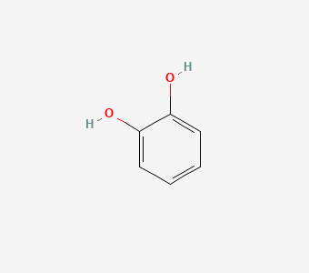
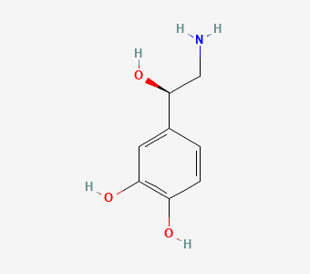
a bare –NH₂ → α₁, α₂, β₁, almost no β₂
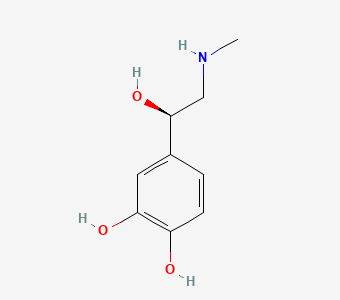
one N-methyl added → β₂ appears; the substituent size on N is what tunes β selectivity
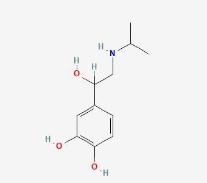
a big isopropyl on N → pure β, no α at all
Drugs
| drug | what it treats |
|---|---|
| Epinephrine (α1 α2 β1 β2) | anaphylactic shock — drug of choice ⭐ · cardiac arrest · prolongs local anaesthetics · topical haemostatic · open-angle glaucoma (dipivefrin) |
| Norepinephrine (α1 α2 β1, little β2) | vasopressor — cardiogenic shock, hypotension |
| Isoproterenol (β1 = β2) | inotropic agent · reverses β-blocker overdose |
| Oxymetazoline · Xylometazoline · Tetrahydrozoline (non-selective α) | topical nasal decongestant · red/itchy eye from allergy |
Uses
Anaphylaxis — epinephrine · Shock / hypotension — NE, epinephrine · Cardiac arrest — epinephrine · Local vasoconstriction & haemostasis — epinephrine · Decongestion — oxymetazoline, tetrahydrozoline
Why NE slows the heart
NE raises systolic and diastolic BP through α1. The baroreceptor response fires a vagal reflex → negative chronotropic effect that cancels out its own β1 tachycardia.
Adverse effects
- 🔴 Cerebral haemorrhage · cardiac arrhythmias
- Throbbing headache, restlessness, tremor, palpitations
- Isoproterenol: marked vasodilation and reflex tachycardia
- Topical decongestants: rebound congestion with prolonged use
Administration — epinephrine is dose-dependent, in both directions
- 🔴 Cannot be given orally — destroyed by COMT and MAO in the small intestine and liver, so it is IV or SC only. Subcutaneous absorption is slower than IV.
- ⭐ The dose decides the receptor, and the receptor decides the blood pressure:
- Low dose (0.01 μg/kg/min) → β₂ predominates → vasodilation → BP falls
- High dose (> 0.2 μg/kg/min) → both α and β → BP rises
- Continuous IV infusion for hypotension: 0.05–1 μg/kg/min.
- Anaphylactic shock: 0.3–0.5 mL of a 1:1000 solution. Local vasoconstriction: 1:200,000.
- 💡 Half-life is ~2 minutes, which is why it is run as an infusion and why stopping the pump is the antidote for overshoot — there is no oral route to undo.
- ⚠️ The same ampoule at the wrong dilution does the opposite thing. 1:1000 and 1:200,000 are not interchangeable strengths of one drug; they are two different jobs.
α1-Selective Agonists
Mechanism
Selective α1 activation — no meaningful β effect, so you get pure vasoconstriction without cardiac stimulation.
→ Downstream: vascular smooth muscle contraction → ↑ BP · mydriasis (pupillary dilator) · mucosal vasoconstriction → decongestion
Drugs
| drug | what it treats |
|---|---|
| Phenylephrine | nasal decongestant · mydriatic (ophthalmic) · vasopressor |
| Midodrine (prodrug → desglymidodrine) | orthostatic hypotension — the orally active option |
Adverse effects
- Hypertension · myocardial infarction
- Rebound nasal congestion (phenylephrine)
- ⚠️ Supine hypertension with midodrine — do not dose near bedtime
Administration — phenylephrine & midodrine
- Phenylephrine as a vasopressor: 0.5–8 μg/kg/min. Also supplied as eye drops (mydriatic) and as nasal drops/spray (decongestant) — three routes, three completely different indications.
- Midodrine is the orally effective α1 agonist — a prodrug converted to desglymidodrine (peak ~1 h, half-life 3 h, duration of action 4–6 h), used for orthostatic hypotension.
- 🔴 Midodrine's dosing instruction is a posture instruction: its main problem is supine hypertension, so the patient stays upright and avoids lying down for 4 hours after a dose — and it is not taken at bedtime.
- 💡 That single rule is what makes midodrine workable at home. A patient who takes it and goes for a nap gets the adverse effect the drug was prescribed to prevent, in reverse.
- ⚠️ Topical α1 agonists cause rebound nasal congestion — the reason nasal decongestant sprays carry a few-days limit.
α2-Selective Agonists — Centrally-Acting Sympatholytics
Mechanism
An agonist that acts as a sympatholytic ⭐ — the paradox worth understanding. Stimulating α2 at the nucleus tractus solitarius in the lower brainstem reduces sympathetic outflow, and stimulating presynaptic α2 autoreceptors reduces NE release.
→ Downstream: ↓ sympathetic tone → ↓ peripheral resistance → ↓ BP, without postural hypotension → In the eye: ↓ aqueous humour production → ↓ IOP (apraclonidine, brimonidine) IV clonidine transiently raises BP first — direct α1 on vascular smooth muscle — before the central effect takes over.
Drugs
| drug | what it treats |
|---|---|
| Clonidine | hypertension · opioid / drug-withdrawal symptoms |
| Methyldopa (→ α-methyl-NE in brain) | hypertension — the choice in pregnancy ⭐ |
| Guanfacine | hypertension · ADHD (sustained-release, ages 6–17) |
| Guanabenz | hypertension |
| Moxonidine (α2 + imidazoline I1) | hypertension · adjunct analgesia |
| Tizanidine | muscle relaxant (spasticity) |
| Apraclonidine · Brimonidine | glaucoma — topical, no BP effect |
Adverse effects
- Sedation, dizziness, dry mouth ⭐ — the class signature
- Hypotension, syncope, bradycardia
- Sexual dysfunction
- Brimonidine crosses the BBB → hypotension, depression (apraclonidine does not — but irritates the eye)
Cautions
- 🔴 Never stop clonidine abruptly — rebound hypertension ⭐
β1-Selective Agonists
Mechanism
Selective β1 stimulation at the heart, sparing β2 — so you get contractility without much vasodilation or bronchial effect.
→ Downstream: positive inotropic → ↑ cardiac output, with less tachycardia than isoproterenol
Drugs
| drug | what it treats |
|---|---|
| Dobutamine | acute heart failure · post-cardiac-surgery low output · acute MI |
Adverse effects
- Hypertension, myocardial infarction
- Hyperglycemia
- ⚠️ Tachyphylaxis on long-term use
Administration — dobutamine
- Not orally absorbed. Given by infusion pump; onset 1–2 min, half-life ~2 min, duration ~10 min, steady state within 10 minutes of starting the infusion.
- Initial dose 0.5–1.0 μg/kg/min · therapeutic range 2–20 μg/kg/min (usual working rate 2.5–10 μg/kg/min).
- ⚠️ Long-term use causes tachyphylaxis — it is a short-term drug for cardiac decompensation after cardiac surgery, acute CHF or acute MI, not a maintenance one.
- 💡 Everything about this drug is minutes long, which is the point: the dose is titrated against the patient in front of you, and the effect is gone within ten minutes of stopping.
β2-Selective Agonists
Mechanism
Selective β2 activation → Gs → ↑cAMP → smooth muscle relaxation, mainly bronchial.
→ Downstream: bronchodilation · uterine relaxation · ↓ mediator release from mast cells (histamine, leukotriene) → At high dose the selectivity fails and β1 is stimulated → tachycardia. This is the source of every ADR below.
Three tiers by duration
| tier | drugs | point |
|---|---|---|
| SABA | Salbutamol (albuterol), terbutaline, procaterol, fenoterol | prompt onset — rescue in acute attack |
| LABA | Salmeterol, formoterol | never as monotherapy ⭐ — always with an inhaled corticosteroid; salmeterol's slow onset makes it useless for an acute attack |
| VLABA | Indacaterol, vilanterol | once daily, COPD |
Drugs
| drug | what it treats |
|---|---|
| Salbutamol | asthma, obstructive airway disease |
| Terbutaline | asthma, COPD, status asthmaticus · premature labour (practical choice) |
| Salmeterol / Formoterol | asthma maintenance; formoterol also exercise-induced bronchospasm, COPD |
| Indacaterol / Vilanterol | COPD |
| Ritodrine | uterine relaxant — largely abandoned, questionable perinatal benefit and ↑ maternal morbidity |
Adverse effects
- Tremor ⭐ · tachycardia
- Restlessness, apprehension, anxiety
Cautions
- ⚠️ Salbutamol / clenbuterol as illegal livestock growth agents (สารเร่งเนื้อแดง) — residues cause muscle cramps, tremor, agitation, headache, nausea. Banned in animal feed in Thailand and abroad.
- ⚠️ Contraindicated where a stray β1 effect matters: cardiovascular disease, thyroid disease
Administration — β2 agonists by formulation
| drug | formulations | onset / duration | |
|---|---|---|---|
| SABA | Salbutamol | tab · aqueous solution · DPI · MDI · solution for nebulizer | prompt onset |
| Terbutaline | tab · syrup · sterile solution · solution for nebulizer | rapid onset, persists 3–6 h | |
| Procaterol | syrup · tab | ||
| Fenoterol | inhaler (with ipratropium) | prompt onset, lasts 4–6 h | |
| LABA | Salmeterol — 🔴 never alone | inhaler (with fluticasone) | slow onset |
| Formoterol — 🔴 never alone | inhaler (with budesonide) | > 12 h | |
| VLABA | Indacaterol | oral inhalation (with tiotropium) | once daily, fast onset |
| Vilanterol | oral inhalation (with fluticasone) | once daily |
- 🔴 Salmeterol's slow onset is why it must never be used for an acute attack and why it is not monotherapy — a patient reaching for the LABA inhaler during bronchospasm is reaching for the wrong one. Salmeterol is the choice for nocturnal asthma; formoterol also covers exercise-induced bronchospasm.
- ⭐ Terbutaline is the one with a route for every situation — oral, subcutaneous or inhaled — which is why it turns up in status asthmaticus and, separately, in relaxing the pregnant uterus.
- 💡 Check which inhaler is the rescue one at every counselling. It is the single most common patient-side error in this class, and the drugs are deliberately packaged to look alike.
β3-Selective Agonists
Mechanism
β3 sits on the detrusor muscle of the bladder (also brown/white fat, gallbladder, ileum). Agonism relaxes the detrusor, raising storage capacity.
→ Downstream: ↓ involuntary detrusor contraction → ↓ urgency & frequency
Drugs
| drug | what it treats |
|---|---|
| Mirabegron | overactive bladder (OAB) · urinary incontinence — also combined with solifenacin |
Adverse effects
- Hypertension
- ↑ urinary tract infection
- Headache
Interactions
- Mirabegron is a moderate CYP2D6 inhibitor
Dopamine-Receptor Agonists
Mechanism
Dopamine is the precursor of NE and Epi and hits dopaminergic and adrenergic receptors — so its effect is entirely dose-dependent ⭐:
| dose | receptor | effect |
|---|---|---|
| 1–3 μg/kg/min | D1 | renal/splanchnic vasodilation → ↑ renal blood flow, ↑ GFR |
| 3–10 μg/kg/min | β1 | positive inotropic |
| >10 μg/kg/min | α1 (+β1) | vasoconstriction, vasopressor |
→ Downstream: short T½ (~2 min), onset 5 min, duration <10 min — an infusion drug only
Drugs
| drug | what it treats |
|---|---|
| Dopamine | cardiogenic shock with low cardiac output + failing renal function |
| Fenoldopam (D1 >> D2) | severe hypertension in hospital — IV, for no more than 48 h |
Adverse effects
- Fenoldopam: headache, flushing, dizziness, tachycardia or bradycardia
Administration — dopamine & fenoldopam
- Dopamine: IV only — by injection or continuous infusion, 2–5 μg/kg/min, increased gradually to 20–50 μg/kg/min. ⭐ It stimulates cardiac β1 while increasing renal blood flow — the opposite of norepinephrine, which reduces it and can cost the kidney.
- Fenoldopam: given through a calibrated infusion pump at 0.01–1.6 μg/kg/min, half-life ~10 minutes, 🔴 for no more than 48 hours, for severe hypertension in hospitalised patients.
- 💡 The 48-hour ceiling and the calibrated-pump requirement are the two things that make fenoldopam an inpatient-only drug — there is no version of this that goes home with anyone.
Indirect & Mixed-Acting Sympathomimetics
Mechanism
No receptor binding of their own — they raise synaptic NE instead. Two routes:
- Displacers — enter the nerve ending and push stored catecholamine out (amphetamine-like)
- Reuptake inhibitors — block NET, so released transmitter isn't cleared (cocaine, atomoxetine)
→ Downstream: ↑ BP, cardiac stimulation, arrhythmia · CNS: euphoria, alertness, ↓ fatigue, anorexia, insomnia, seizures at high dose → Mixed-acting (ephedrine): direct α + β agonism and NE release — plus CNS penetration
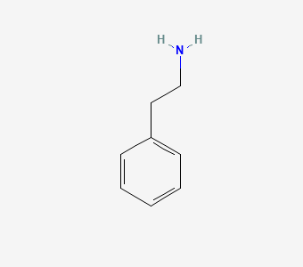
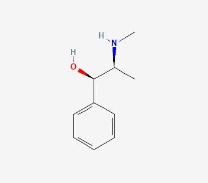
orally active, hours not minutes, mixed direct + indirect
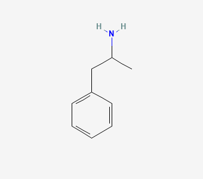
an α-methyl also blocks MAO → even longer, and straight into the CNS
Drugs
| drug | what it treats |
|---|---|
| Amphetamine · Methamphetamine · Dextroamphetamine (displacers) | CNS stimulant, appetite suppression — abuse liability |
| Methylphenidate (displacer) | ADHD |
| Cocaine (NET inhibitor) | local anaesthetic with vasoconstriction; otherwise a drug of abuse |
| Atomoxetine (NET inhibitor) | ADHD |
| Ephedrine (mixed) | decongestant · mild CNS stimulant · orthostatic hypotension |
| Pseudoephedrine (mixed) | OTC oral decongestant |
Adverse effects
- Hypertension, palpitations, arrhythmia
- Insomnia, restlessness, dependence
- Urinary retention (α at the bladder)
- Tolerance to nasal drops after ~10 days of use
Cautions & contraindications
- 🔴 Phenylpropanolamine (PPA) was withdrawn — rapid tolerance → dose escalation → haemorrhagic stroke ⭐
- 🔴 Pseudoephedrine contraindicated in: hypertension / coronary artery disease · hyperthyroidism · narrow-angle glaucoma · BPH · impaired eliminating organs · MAO inhibitors now or in the last 2 weeks · pregnancy, lactation, age <2 y
- ⚠️ Pseudoephedrine and ephedra are methamphetamine precursors — a legal control issue, not just a clinical one
Selective α1-Blockers
Mechanism
Competitive α1 blockade. Because presynaptic α2 is left intact, NE release is still auto-inhibited — so reflex tachycardia is far milder than with the non-selective blockers ⭐.
→ Downstream: arterial and venous dilation → ↓ peripheral resistance → ↓ BP · relaxation of prostate and bladder-neck smooth muscle → improved urine flow Tamsulosin and silodosin prefer the α1A subtype that dominates the prostate → prostate-selective, less BP effect.
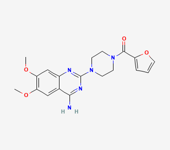
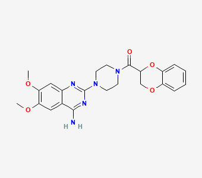
a benzodioxane tail → t½ ~22 h → once daily
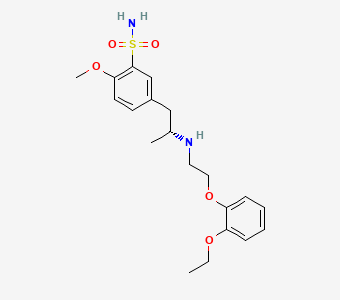
🔴 not a quinazoline at all — a sulfonamide that prefers α₁A (prostate) over α₁B (vessels), which is why it drops BP less
Drugs
| drug | what it treats |
|---|---|
| Prazosin | hypertension (short T½ ~3 h) |
| Terazosin | hypertension · BPH |
| Doxazosin | hypertension · BPH (longest-acting of the three) |
| Alfuzosin | BPH |
| Tamsulosin (α1A) | BPH — least postural hypotension |
| Silodosin (α1A) | BPH |
| Indoramin · Urapidil | hypertension |
Uses
Hypertension — usually combined with a diuretic or β-blocker to blunt the compensatory fluid retention and tachycardia · BPH with urinary retention — tamsulosin often with finasteride (5α-reductase inhibitor) to shrink the gland · Raynaud's disease / vasospasm
Adverse effects
- 🔴 First-dose phenomenon ⭐ — abrupt syncope on the very first tablet
- Postural (orthostatic) hypotension, dizziness
- Headache, nasal congestion, oedema, flushing, nausea
- Alfuzosin: QTc prolongation
Cautions
- ⚠️ Start at ⅓–½ of the usual dose and give it at bedtime — this is how the first-dose phenomenon is prevented
Administration — α1-blocker doses & forms
| drug | indication | dosage form | half-life |
|---|---|---|---|
| Alfuzosin | BPH | ER tab 10 mg | |
| Doxazosin | hypertension, BPH | tab 2, 4 mg | 20 h |
| Prazosin | hypertension | tab 1, 2 mg | 2–3 h |
| Tamsulosin | BPH | tab 0.4 mg | |
| Terazosin | hypertension, BPH | tab 1, 2, 5 mg | 12 h |
| Silodosin (selective α1A) | BPH | tab 4 mg |
- ⭐ The half-life column explains the dosing: prazosin at 2–3 hours has to be given several times a day and is the worst offender for first-dose hypotension; doxazosin at 20 hours is a once-daily drug.
- 💡 The BPH-only agents (tamsulosin, silodosin, alfuzosin) are the α1A-selective end — chosen precisely because they act on the prostate with less effect on blood pressure. That is also why they come in one strength.
Non-Selective α-Blockers
Mechanism
Block α1 and α2. Losing the presynaptic α2 autoreceptor means more NE is released, which floods the still-open β1 receptors — hence the marked reflex tachycardia that makes this group unusable for routine hypertension ⭐.
→ Downstream: ↓ peripheral resistance → ↓ BP → baroreceptor reflex + extra NE → tachycardia, ↑ cardiac output → "Epinephrine reversal" ⭐ — with α blocked, epinephrine's β2 vasodilation is unopposed, so epinephrine now lowers BP instead of raising it
Drugs
| drug | what it treats |
|---|---|
| Phenoxybenzamine (α1 > α2, irreversible / covalent, slow onset, long-lasting) | pheochromocytoma · Raynaud's disease |
| Phentolamine (α1 = α2, competitive, rapid and transient) | hypertensive emergency in pheochromocytoma · male erectile dysfunction (with papaverine) |
| Yohimbine · Tolazoline (α2 >> α1) | little clinical use — orthostatic hypotension, erectile dysfunction |
Uses
Pheochromocytoma — the one real indication: an adrenal medullary tumour dumping Epi and NE, giving hypertension, tachycardia and arrhythmia · Toxicity from sympathomimetic drugs · Reversible vasospasm (Raynaud's)
Adverse effects
- 🔴 Severe reflex tachycardia → arrhythmia, myocardial infarction
- Orthostatic hypotension, nasal congestion, nausea, vomiting
- Phentolamine: diarrhoea, ↑ gastric acid secretion (it is also an agonist at muscarinic and H1/H2 receptors)
- Priapism when used for erectile dysfunction
Non-Selective β-Blockers
Mechanism
Competitive antagonism at β1 and β2 equally. Propranolol is the prototype and the comparator for every newer agent.
→ Heart: negative inotropic & chronotropic, slowed AV conduction, ↓ myocardial O₂ demand → Kidney: ↓ renin release → ↓ angiotensin II — this is why peripheral resistance eventually falls even though acute β2 blockade raises it ⭐ → Lung: β2 blockade → bronchoconstriction · Eye: ↓ aqueous humour → ↓ IOP → Also: "membrane-stabilising" local anaesthetic action (Na⁺ channel block)
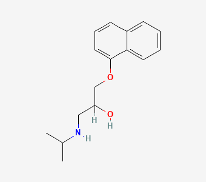
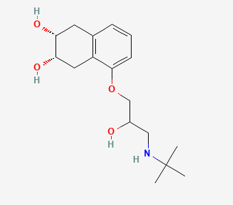
hydroxyls on the ring → water-soluble → renal clearance, no CNS effects, long t½
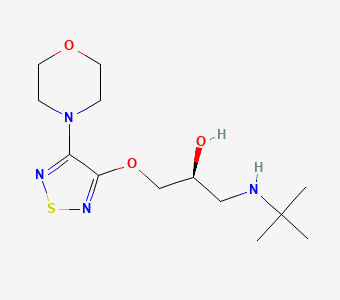
a thiadiazole ring; small enough for eye drops — and systemic enough to cause bronchospasm from them
Drugs
| drug | what it treats |
|---|---|
| Propranolol | hypertension · angina · arrhythmia · migraine prophylaxis · hyperthyroidism / thyroid storm ⭐ · essential tremor · stage fright · infantile haemangioma |
| Nadolol | hypertension · oesophageal varices (with isosorbide mononitrate) |
| Timolol | open-angle glaucoma (eye drop) · post-MI survival |
| Pindolol · Carteolol · Penbutolol | hypertension (these also carry ISA — see that page) |
Uses
Hypertension · Ischaemic heart disease — ↑ exercise tolerance, and timolol/propranolol/metoprolol improve post-MI survival · Arrhythmia — ↑ AV nodal refractory period, slows ventricular rate in AF/flutter · Glaucoma · Hyperthyroidism — propranolol also blocks T4 → T3 conversion · Migraine prophylaxis · Portal hypertension / variceal bleeding · Alcohol and opioid withdrawal
Adverse effects
- 🔴 Bronchospasm ⭐ — the β2 consequence; life-threatening in asthma
- Bradycardia, AV block, worsening heart failure
- Masks hypoglycaemia ⭐ (no tachycardia, no tremor) and impairs recovery from it — dangerous in type 1 DM
- Dyslipidemia — ↑ TG and VLDL, ↓ HDL
- CNS: fatigue, nightmares, insomnia, depression (worse with lipophilic agents; less with nadolol, atenolol)
- Sexual dysfunction · cold extremities · worsens Raynaud's
- Overdose: hypotension, bradycardia, prolonged AV conduction, widened QRS, seizures, hypoglycaemia, bronchospasm — treat with isoproterenol, glucagon, atropine ± pacing
Interactions
- 🔴 Verapamil (or other cardiodepressants) → severe hypotension, bradycardia, heart failure
- Aluminium salts, cholestyramine, colestipol ↓ absorption
- Phenytoin, rifampin, phenobarbital, smoking (enzyme induction) ↓ propranolol levels
- Cimetidine, furosemide, chlorpromazine ↑ propranolol levels
- Additive with any other antihypertensive
Cautions
- 🔴 Never stop abruptly after long-term use ⭐ — β-receptor up-regulation → rebound angina, MI, sudden death. Taper, especially short-T½ drugs (propranolol, metoprolol).
- 🔴 Contraindicated in asthma / COPD — use a cardioselective agent if a β-blocker is unavoidable
- ⚠️ Decompensated heart failure still dependent on sympathetic drive
Cardioselective (β1) Blockers
Mechanism
Same competitive blockade, but 50–100× more affinity for β1 than β2 — sparing the bronchi.
→ Downstream: cardiac effects of a β-blocker with much less bronchoconstriction and less interference with glucose and lipid metabolism → ⚠️ Selectivity is relative, not absolute — it is lost at high dose ⭐
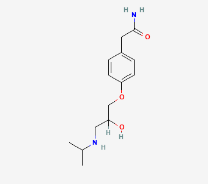
a polar amide para-substituent → β₁-selective AND hydrophilic → no CNS entry
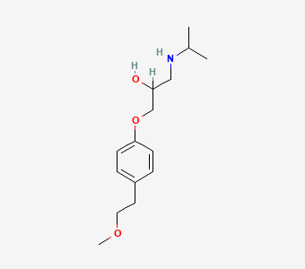
a lipophilic para chain → β₁-selective but does enter the CNS; CYP2D6-metabolised
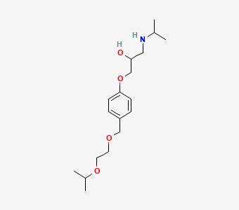
the most β₁-selective of the three; balanced clearance
Drugs
| drug | what it treats |
|---|---|
| Atenolol | hypertension · angina |
| Metoprolol | hypertension · angina · post-MI · heart failure |
| Bisoprolol | hypertension · heart failure |
| Acebutolol | hypertension · arrhythmia (also has ISA) |
| Esmolol | IV only — perioperative tachycardia, SVT (T½ ~10 min, hydrolysed in blood) |
| Betaxolol | hypertension · glaucoma |
| Celiprolol · Nebivolol | hypertension — also vasodilating (third-generation) |
Uses
The β-blocker of choice when the patient also has asthma/COPD, diabetes, or dyslipidemia · Heart failure with reduced ejection fraction — metoprolol, bisoprolol · Acute rate control — esmolol
Adverse effects
- As for non-selective β-blockers, minus most of the respiratory effect
- Bradycardia, fatigue, cold extremities
- Metoprolol is a CYP2D6 substrate — response varies with genotype
β-Blockers with ISA
Mechanism
These are partial agonists: they occupy the β receptor and give a weak sub-maximal stimulation while still blocking endogenous NE/Epi from binding. That resting stimulation is what softens the class ADRs.
→ Downstream: less fall in heart rate and cardiac output · less disturbance of lipid and glucose metabolism ⭐ · theoretically some β2 agonism → mild bronchodilation
Drugs
| drug | what it treats |
|---|---|
| Pindolol | hypertension — the classic ISA agent |
| Acebutolol | hypertension · arrhythmia (β1-selective and ISA) |
| Carteolol · Celiprolol | hypertension (celiprolol = β1 blockade + β2 partial agonism) |
Uses
Hypertension in a patient with dyslipidemia or diabetes ⭐ · Hypertension where bradycardia is already a problem (e.g. a resting HR in the 50s) · Cautiously, hypertension with respiratory disease
Cautions
- ⚠️ A pure antagonist — not an ISA agent — is what works in hyperthyroidism; β-blockers are not interchangeable
α + β Blockers (Third-Generation)
Mechanism
Block β1, β2 and α1 (β1 = β2 ≥ α1 > α2). The α1 component removes the peripheral vasoconstriction that plain β-blockade would leave behind, so BP falls harder and faster.
→ Downstream: ↓ peripheral resistance and ↓ cardiac work · no adverse effect on lipids or glucose ⭐
Drugs
| drug | what it treats |
|---|---|
| Labetalol | hypertensive emergency · hypertension in pregnancy (replaces hydralazine) ⭐ |
| Carvedilol | heart failure with reduced ejection fraction ⭐ · hypertension |
How the vasodilating β-blockers actually dilate
| mechanism | drugs |
|---|---|
| Nitric oxide production | Celiprolol, nebivolol, carteolol, bopindolol, nipradilol |
| β2 agonism | Celiprolol, carteolol, bopindolol |
| α1 antagonism | Carvedilol, labetalol, bucindolol, bevantolol, nipradilol |
| Ca²⁺ entry blockade | Carvedilol, betaxolol, bevantolol |
| K⁺ channel opening | Tilisolol |
| Antioxidant activity | Carvedilol |
Uses
Hypertensive emergency — IV labetalol · Pregnancy hypertension — labetalol · HFrEF — carvedilol · Hypertension complicated by dyslipidemia or diabetes
Clinical Applications
Sympathomimetics — where they get used
| target | drugs |
|---|---|
| Shock / hypotension / cardiac arrest | epinephrine · norepinephrine · dopamine · dobutamine · phenylephrine |
| Anaphylaxis | epinephrine |
| Nasal & ocular decongestion | phenylephrine · oxymetazoline · tetrahydrozoline · pseudoephedrine |
| Asthma / COPD | salbutamol · terbutaline · procaterol · salmeterol · formoterol |
| Glaucoma & mydriasis | brimonidine · apraclonidine · phenylephrine |
| Uterine relaxation | terbutaline · ritodrine |
| Hypertension | clonidine · methyldopa · fenoldopam |
| Withdrawal craving (opioid, alcohol) | clonidine |
| Overactive bladder | mirabegron |
| ADHD | methylphenidate · atomoxetine · guanfacine |
Sympatholytics — where they get used
| target | drugs |
|---|---|
| Hypertension | prazosin · doxazosin · most β-blockers · labetalol · carvedilol |
| Pheochromocytoma | phenoxybenzamine · phentolamine |
| BPH / urinary retention | tamsulosin · silodosin · alfuzosin · terazosin · doxazosin |
| Angina & post-MI | propranolol · metoprolol · timolol · atenolol |
| Arrhythmia | propranolol · esmolol · sotalol |
| Heart failure (HFrEF) | carvedilol · metoprolol · bisoprolol |
| Glaucoma | timolol · betaxolol |
| Hyperthyroidism | propranolol |
| Migraine prophylaxis · essential tremor · stage fright | propranolol |
| Oesophageal varices | nadolol · propranolol |
Principle behind this: Principles of Drug Action — What the Drug Does to the Body — The sympathomimetics are the defined GPCR example — receptor → G protein → adenylyl cyclase. Also where α/β subtype selectivity is decided.
Principle behind this: Basic Concepts in CNS Pharmacology — Six Ideas the Whole Course Rests On — α2 as the presynaptic autoreceptor, NET as the reuptake target, and the locus coeruleus as the single-source divergent nucleus.
Source: 2568_Slide_Aug 27 and 28_Sympathomimetic and sympatholytic drugs.pdf — อ.วิลาสินี, PYCH304 Pharmacology I, 69 slides. Structures omitted.


/3 Thyroid-PTH 2024 student.pdf-fig-07.png)